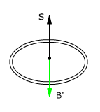
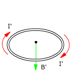

|
 |
 |
b) Suprimir la corriente en la espira a
Tomamos el vector superficie de la espira b hacia arriba
|
En la espira b se induce una corriente en el mismo sentido que la corriente en la espira a.
Esta corriente inducida circula mientras está cambiando el campo, es decir durante el tiempo que tarda en desaparecer la intensidad en la espira a (Es decir: muy poco tiempo)